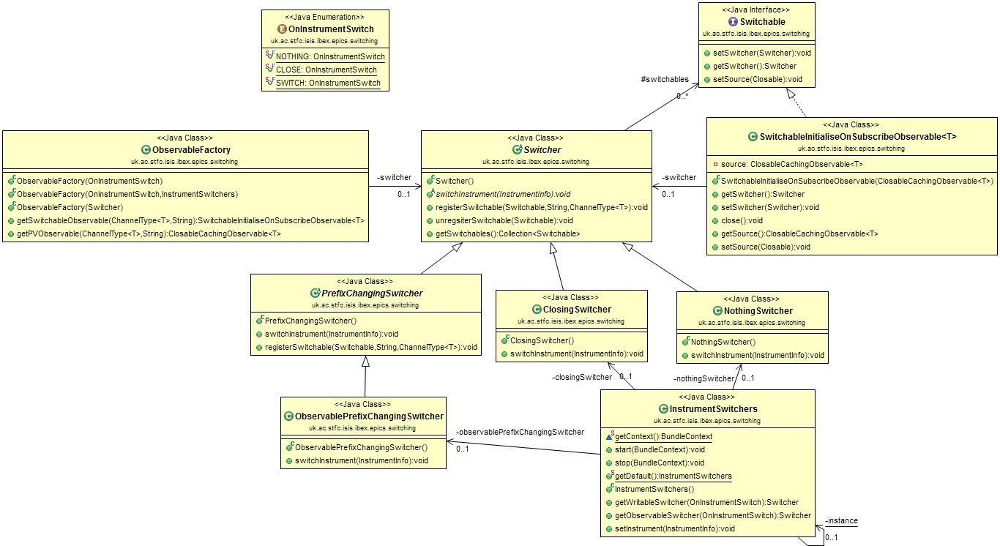
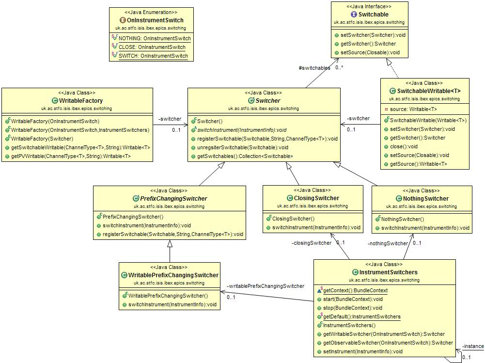

Instrument & PV switching
To create a PV in the GUI which switches instrument, or closes, on instrument switch, use:
ObservableFactory closingObsFactory = new ObservableFactory(OnInstrumentSwitch.CLOSE);
ForwardingObservable<String> pv
= closingObsFactory.getSwitchableObservable(new StringChannel(), "A_PV_ADDRESS"));
Subscriptions can then be attached to the PV and will be called when PVs change value.
Design
Extension point
Instrument switching in the GUI uses an extension point. This means that the switch can take place in a central place, and each plugin which is interested can sign up to receive a callback on the switching event. This keeps a separation between the plugins and the instrument switching module; a plugin can be removed without changing the instrument switching code.
The instrument switching in E4 is performed through the E3 compatibility layer, as E4 has no native support for extension points. The equivalent behaviour in E4 is provided through services, which might be a necessary transition as services and extensions points are not cross-compatible.
This extension point is setup in uk.ac.stfc.isis.ibex.instrument/META-INF/MANIFEST.MF (see the extension Points tab).
This sets up the name of the extension point and the schema.
The schema is in /uk.ac.stfc.isis.ibex.instrument/schema/uk.ac.stfc.isis.ibex.instrument.info.exsd
(click Schema on previous page).
This defines the methods that should be fulfilled by the plugin that want to sign up to this extension.
In this case there are three methods:
preSetInstrument- this will be called before the instrument is switched. This is useful for closing resources using the old instrument.setInstrument- this will be called to set the instrument and should actually perform the change.postSetInstrument- this will be called after the instrument is set. It can be used, for example, to perform final clean up of resources or reopening of perspectives.
The instrument handler is responsible for calling this method on each registered plugin.
It does this in the method
uk.ac.stfc.isis.ibex.instrument.Instrument.setInstrumentForAllPlugins in the private method updateExtendingPlugins.
All preSetInstruments methods are called before any setInstrument methods.
To sign up to this event, the plugin must create a class which implements the interface
uk.ac.stfc.isis.ibex.instrument.InstrumentInfoReceiver.
This will be instantiated when the instrument is switched to.
This class is registered in the plugin’s extensions (this is similar to
adding a perspective).
Observables
The design of switchable PVs in the GUI uses a factory to create PV Observables, which are passed the switching behaviour as a switcher class. Each of these switcher classes provides a different switching functionality and is switched using the Eclipse extension point that is globally used for instrument switching in the GUI.

When an observable PV is required an instance of
ObservableFactoryis first created and passed anOnInstrumentSwitchenum to describe which switching behaviour is requiredOn initialisation the factory will then query the
InstrumentSwitchersclass for the specific Switcher class that handles that type of switching.The original class that wanted the PV will subsequently ask the factory for PVs, providing the channel type and PV address. This will be provided as a
SwitchableObservablethat can be subscribed to for value changes.Before providing the new
Observableobject the factory will register it with the relevantSwitcherclass, each of which holds a list of allSwitchableobjects that it is required to switch. TheSwitchableObservableis also provided with a reference to the switcher so that it can remove itself from the relevant list if it is closed for any reason.When the instrument is changed the
InstrumentSwitchersclass will call theswitchInstrumentsmethod on each of the switchers, which will then go on to perform the relevant switching behaviour - for example changing aSwitchable’s source, closing it, or doing nothing.
Writables
A similar process also occurs when switching writable PVs, as can be seen in the UML diagram below. The differences
being that a WritableFactory is used, this can create a Writable that inherits from Switchable and can write
values to PVs. Both the Switchable interface and the abstract PrefixChangingSwitcher are provided, so that
the switching process is as similar as possible when dealing with Writables and Observables.
